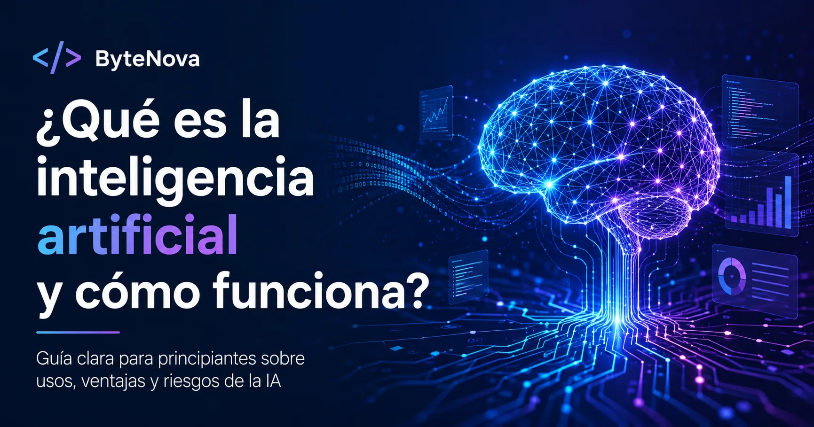

¿Qué es la inteligencia artificial y cómo funciona?

Qué es la inteligencia artificial, cómo funciona, dónde se utiliza, cuáles son sus principales ventajas y riesgos, y por qué es importante emplearla de manera responsable.
Contenido del artículo
La inteligencia artificial, conocida también como IA, es una tecnología que permite crear sistemas capaces de analizar información, reconocer patrones y realizar tareas que normalmente requieren capacidades humanas.
Actualmente, la IA está presente en teléfonos, buscadores, redes sociales, plataformas de video, aplicaciones de mapas, asistentes virtuales, programas de diseño y herramientas educativas.
Una explicación sencilla
La inteligencia artificial puede entenderse como un conjunto de programas diseñados para procesar información y producir resultados útiles.
En lugar de limitarse a seguir una única instrucción, algunos sistemas de IA pueden analizar grandes cantidades de datos, identificar relaciones y utilizar lo aprendido para responder preguntas, realizar predicciones o generar contenido.
Cuando una plataforma recomienda una película basándose en lo que has visto anteriormente, utiliza inteligencia artificial para comparar tus preferencias con diferentes contenidos.
¿Cómo funciona la inteligencia artificial?
El funcionamiento puede variar según el sistema, pero normalmente incluye varias etapas.
Recopilación de datos
El sistema recibe textos, imágenes, sonidos, números u otra información relacionada con la tarea que debe aprender.
Entrenamiento
Un modelo analiza los datos para encontrar patrones, características y relaciones.
Evaluación
Se comprueba si las respuestas del sistema son suficientemente precisas y se realizan ajustes cuando es necesario.
Generación de resultados
Después del entrenamiento, el modelo puede clasificar información, responder preguntas, recomendar contenido o generar nuevos resultados.
Una IA no aprende exactamente como una persona. Su funcionamiento depende de datos, modelos matemáticos, instrucciones y sistemas informáticos.
¿Dónde se utiliza la inteligencia artificial?
La inteligencia artificial se utiliza en numerosos sectores y actividades cotidianas.
Tutores digitales, ejercicios personalizados y herramientas de estudio.
Análisis de imágenes, apoyo al diagnóstico y organización de información.
Detección de actividades sospechosas, spam, fraudes y amenazas.
Recomendaciones de productos, atención al cliente y análisis de ventas.
Optimización de rutas, tráfico, navegación y sistemas de asistencia.
Generación de ejemplos, revisión de código y explicación de errores.
Ejemplos comunes de inteligencia artificial
Muchas personas utilizan inteligencia artificial diariamente sin darse cuenta.
- Asistentes virtuales y chatbots.
- Traductores automáticos.
- Filtros de correo no deseado.
- Recomendaciones de música, películas y videos.
- Reconocimiento de voz y de imágenes.
- Herramientas que generan textos, imágenes o sonidos.
- Sistemas que detectan movimientos bancarios sospechosos.
- Aplicaciones que calculan rutas y condiciones del tráfico.
Principales ventajas de la inteligencia artificial
- Puede analizar grandes cantidades de información rápidamente.
- Ayuda a automatizar tareas repetitivas.
- Puede apoyar el aprendizaje y la investigación.
- Facilita la creación de contenidos y prototipos.
- Permite detectar patrones difíciles de observar manualmente.
- Puede mejorar algunos procesos de atención al cliente.
Estas ventajas dependen de la calidad del sistema, de los datos utilizados y de la forma en que las personas empleen la tecnología.
Riesgos y limitaciones de la inteligencia artificial
La inteligencia artificial también puede generar problemas cuando se usa sin supervisión o sin comprender sus limitaciones.
- Puede producir información incorrecta o inventada.
- Puede reproducir errores o prejuicios presentes en sus datos.
- Puede afectar la privacidad si se comparten datos personales.
- Puede utilizarse para crear contenido engañoso.
- Puede generar dependencia cuando sustituye el pensamiento crítico.
- Sus respuestas no siempre incluyen contexto suficiente.
Verifica los datos importantes en fuentes confiables y evita compartir contraseñas, documentos privados, información bancaria o datos personales con herramientas de inteligencia artificial.
¿La IA piensa como una persona?
No. Aunque algunas respuestas pueden parecer humanas, la inteligencia artificial no posee conciencia, emociones, experiencias personales ni comprensión del mundo como una persona.
Un sistema de IA procesa información mediante algoritmos y modelos. Puede generar una respuesta convincente, pero eso no significa que comprenda el contenido de la misma manera que un ser humano.
¿Por qué es importante aprender sobre inteligencia artificial?
Comprender la inteligencia artificial ayuda a utilizarla de manera más eficiente, segura y responsable.
También permite reconocer sus límites, evaluar mejor sus respuestas y prepararse para un entorno educativo y laboral cada vez más relacionado con la tecnología.
Uso responsable de la inteligencia artificial
Utilizar IA responsablemente significa emplearla como una herramienta de apoyo y no como un reemplazo completo del conocimiento o del criterio personal.
- Verifica la información antes de utilizarla.
- Protege tus datos personales.
- No presentes contenido generado como propio sin revisarlo.
- Compara las respuestas con fuentes confiables.
- Utiliza la IA para aprender, no únicamente para copiar.
- Reconoce cuándo una decisión necesita supervisión humana.
Preguntas frecuentes sobre inteligencia artificial
¿La inteligencia artificial puede equivocarse?
Sí. Puede producir respuestas incorrectas, incompletas o desactualizadas. Por eso es necesario verificar la información importante.
¿Es necesario saber programación para utilizar IA?
No. Muchas herramientas pueden utilizarse sin conocimientos de programación, aunque aprender conceptos tecnológicos permite comprenderlas mejor.
¿La inteligencia artificial reemplazará todos los trabajos?
No puede afirmarse que reemplazará todos los trabajos. Es más probable que transforme tareas, profesiones y formas de trabajar, creando también nuevas necesidades y funciones.
¿La inteligencia artificial es gratuita?
Existen herramientas gratuitas y otras de pago. Algunas ofrecen funciones limitadas sin costo y planes avanzados mediante suscripción.
¿Es seguro compartir información con una IA?
No debe compartirse información privada o confidencial sin conocer cómo será almacenada y utilizada por el servicio.
Conclusión
La inteligencia artificial es una tecnología que permite analizar datos, reconocer patrones, automatizar procesos y generar resultados útiles.
Puede ayudar en la educación, medicina, programación, comercio, ciberseguridad y muchas otras áreas. Sin embargo, sus respuestas deben revisarse porque puede cometer errores y presentar información incorrecta.
Aprender sus fundamentos permite aprovechar sus beneficios sin olvidar la privacidad, la seguridad y el pensamiento crítico.
ByteNova
Plataforma educativa dedicada a explicar programación, inteligencia artificial, desarrollo web y ciberseguridad de manera clara y accesible para principiantes.
Conoce más sobre ByteNova →